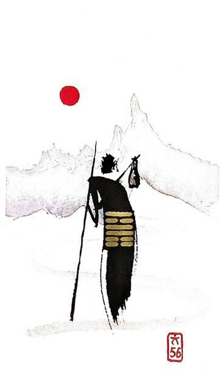

화산려
평괘 26
(♫~모모는 철부지, 모모는 무지개
모모는 방랑자~모모는 외로운 그림자모모는환상가~~♫)무지개를 찾아 먼 길을 떠난다정처 없이 떠도는 나그네!언제라도 떠날 수 있는 간소한 짐을 들고 여행하는 상황을 표현한 그림
여행.나그네.방랑자.여행자.모험.움직임.이동.혼자임.변동.이동.모험이 잦은 시기.쓸쓸.고독.불안
연애운
상대와 화합이 안됨.제멋대로.잠수이별.만나도 허전하고 외로움
사업운
마음이 한 곳에 있지 못하고 분산.역마살. 외판업.여행업.프리랜서.글쓰는 작가에는 길하다
속마음
썸제멋대로인 마음.상대방이 제멋대로라고 생각하는 마음. 거리감이 있다고 생각하는 마음
1년 이상만나도 허전하고 외로운 마음.마음이 멀어지고 이별까지 생각하는마음
이별 후자유로운 영혼이고 싶은 마음.혼자 있고 싶은 마음
솔로연애운
새로운 이성 생길 확률 낮다
건강운
환자는 좋지 않다.고열.심장병.신경계통 질환